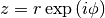

ComplexMath¶
About the ComplexMath class¶
The WaveBlocks Project
@author: R. Bourquin @copyright: Copyright (C) 2010, 2011, 2012, 2013, 2014, 2015, 2016 R. Bourquin @license: Modified BSD License
Class documentation¶
The WaveBlocks Project
Some selected functions for complex math.
@author: R. Bourquin @copyright: Copyright (C) 2011, 2012, 2015 R. Bourquin @license: Modified BSD License
-
ComplexMath.continuate(data, jump=6.283185307179586, reference=0.0)[source]¶ Make the given data continuous by removing all jumps of size
 but not touching jumps of any other size. This can be used to overcome issues with
the branch cut along the negative axis. There may be arise problems with jumps that
are of size nearly .
but not touching jumps of any other size. This can be used to overcome issues with
the branch cut along the negative axis. There may be arise problems with jumps that
are of size nearly .Parameters: - data – An array with the input data.
- jump – The basic size of jumps which will be removed. Default is
 .
. - reference (A single float number.) – This value allows the specify the starting point for continuation
explicitly. It can be used together with
data.
-
ComplexMath.cont_angle(data, reference=None)[source]¶ Compute the angle of a complex number not constrained to the principal value and avoiding discontinuities at the branch cut. This function just applies ‘continuate(.)’ to the complex phase.
Parameters: - data – An array with the input data.
- reference (A single float number.) – This value allows the specify the starting point for
continuation explicitly. It can be used together with
data.
-
ComplexMath.cont_sqrt(data, reference=None)[source]¶ Compute the complex square root (following the Riemann surface) yields a result not constrained to the principal value and avoiding discontinuities at the branch cut. This function applies ‘continuate(.)’ to the complex phase and computes for  the complex square root its square root according to the formula
 .
.Parameters: - data – An array with the input data.
- reference (A single float number.) – This value allows the specify the starting point for
continuation explicitly. It can be used together with
data.